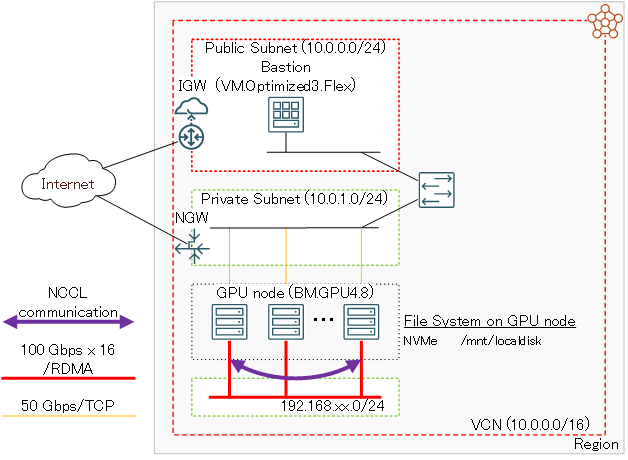

本チュートリアルは、AIや機械学習ワークロードに最適なNVIDIA A100 40/80 GB 8枚と100 GbpsのRDMA対応ネットワークインタフェースを16ポート搭載するUbuntuをOSとするGPUノード（ BM.GPU4.8/BM.GPU.A100-v2.8 ）を クラスタ・ネットワーク を使用してノード間接続し、1ノードでは搭載しきれないGPUを必要とする大規模な分散機械学習ワークロードを実行するためのGPUクラスタを構築、複数ノードに跨るGPU間の通信性能を NCCL（NVIDIA Collective Communication Library） テストプログラム（ NCCL Tests ）で検証します。
本チュートリアルは、 OCI HPCテクニカルTips集 の以下2本のコンテンツを組合せ、 クラスタ・ネットワーク とGPUを使用するためのソフトウェアをインストール・セットアップし、GPUクラスタを構築します。
これらソフトウェアのインストールは、手順が多く相応の所要時間が必要なため、予め最小ノード（2ノード）のクラスタを構築してこのGPUノードにソフトウェアをインストール、このGPUノードの カスタム・イメージ を使用して、実際に使用するGPUクラスタを構築します。
以上より、UbuntuをOSとするGPUクラスタの構築は、以下の手順を経て行います。
- カスタム・イメージ 取得用2ノードGPUクラスタ構築
- クラスタ・ネットワーク 接続用ソフトウェアインストール
- クラスタ・ネットワーク 接続・確認
- GPU関連ソフトウェアインストール
- CUDA Samples によるGPU動作確認
- NCCL 通信性能検証
- カスタム・イメージ 取得
- cloud-init 設定ファイル（cloud-config）作成
- インスタンス構成 作成
- クラスタ・ネットワーク 作成
以降は、機械学習ワークロード向けベアメタルシェイプ BM.GPU4.8 とUbuntu 20.04の組合せを取り上げ、具体的な手順を解説します。
本テクニカルTipsでは BM.GPU4.8 を使用しますが、 BM.GPU.A100-v2.8 の場合も同様の手順を適用することが可能です。

所要時間 : 約4時間
前提条件 : GPUクラスタを収容するコンパートメント(ルート・コンパートメントでもOKです)の作成と、このコンパートメントに対する必要なリソース管理権限がユーザーに付与されていること。
注意 : チュートリアル内の画面ショットについては、OCIの現在のコンソール画面と異なっている場合があります。
1. カスタム・イメージ取得用2ノードGPUクラスタ構築
本章は、 クラスタ・ネットワーク に接続するためのソフトウェアとGPUを利用するためのソフトウェアをインストールした カスタム・イメージ を取得するため、2ノードのGPUクラスタを構築します。
具体的には、 OCI HPCテクニカルTips集 の クラスタ・ネットワーク非対応OSイメージを使ったクラスタ・ネットワーク接続方法 の 1. カスタム・イメージ取得用2ノードHPC/GPUクラスタ構築 の手順を BM.GPU4.8 とUbuntuの組合せで実施します。
この手順を完了すると、以下のリソースがデプロイされた状態になります。
- 仮想クラウド・ネットワーク
- Bastionノード
- クラスタ・ネットワーク
- BM.GPU4.8 x 2（OS：Ubuntu 20.04）
2. クラスタ・ネットワーク接続用ソフトウェアインストール
本章は、 クラスタ・ネットワーク に接続するための以下ソフトウェアをインストールします。
- Mellanox OFED
- wpa_supplicant
- oci-cn-auth
具体的には、 OCI HPCテクニカルTips集 の クラスタ・ネットワーク非対応OSイメージを使ったクラスタ・ネットワーク接続方法 の 2. クラスタ・ネットワーク接続用ソフトウェアインストール の 2-3. Ubuntu 20.04の場合 を実施します。
3. クラスタ・ネットワーク接続・確認
本章は、GPUノードの クラスタ・ネットワーク への接続に必要な設定とその接続確認のため、以下の手順を実施します。
- クラスタ・ネットワーク 接続用ネットワークインターフェース作成
- Intel MPI Benchmark 実行
具体的には、 OCI HPCテクニカルTips集 の クラスタ・ネットワーク非対応OSイメージを使ったクラスタ・ネットワーク接続方法 の 3. クラスタ・ネットワーク接続・確認 を BM.GPU4.8 とUbuntu 20.04の組合わせで実施します。
4. GPU関連ソフトウェアインストール
本章は、GPU関連ソフトウェアをインストールします。
具体的には、 OCI HPCテクニカルTips集 の UbuntuをOSとする機械学習ワークロード向けGPUノード構築方法 の 2. GPU関連ソフトウェアインストール を実施し、以下のソフトウェアをインストールします。
- NVIDIA Driver
- NVIDIA CUDA
- NVIDIA Fabric Manager
その後、以下コマンドをGPUノードのubuntuユーザで実行し、 NCCL をインストールします。
$ wget https://developer.download.nvidia.com/compute/cuda/repos/ubuntu2004/x86_64/cuda-keyring_1.0-1_all.deb
$ sudo dpkg -i cuda-keyring_1.0-1_all.deb
$ sudo apt install libnccl2=2.15.5-1+cuda11.8 libnccl-dev=2.15.5-1+cuda11.8
なお本章の作業は、2ノードに跨る NCCL 通信性能検証を行う必要から、2台のGPUノードの何れにも実施します。
5. CUDA SamplesによるGPU動作確認
本章は、 CUDA Samples で先のGPU関連ソフトウェアのインストールが正しく行われたかを確認します。
具体的には、 OCI HPCテクニカルTips集 の UbuntuをOSとする機械学習ワークロード向けGPUノード構築方法 の 3. CUDA Samplesによる動作確認 を実施します。
なお本章の作業は、2ノードに跨る NCCL 通信性能検証を行う必要から、2台のGPUノードの何れにも実施します。
6. NCCL通信性能検証
6-0. 概要
本章は、 NCCL Tests を使用し、GPUクラスタ内の NCCL によるGPU間通信性能を確認します。
ここで使用する NCCL Tests は、ソースコードからビルドします。
以上より、本章で実施する NCCL 通信性能検証は、以下の手順を経て行います。
- NCCL Tests ビルド
- NCCL Tests 実行
6-1. NCCL Testsビルド
本章は、 NCCL Tests を GitHub からダウンロード、ビルドします。
以下コマンドを2台のGPUノードのubuntuユーザで実行し、 NCCL Tests をビルドします。
$ cd ~; git clone https://github.com/NVIDIA/nccl-tests.git
$ cd nccl-tests; make MPI=1 MPI_HOME=/usr/mpi/gcc/openmpi-4.1.7a1 CUDA_HOME=/usr/local/cuda NCCL_HOME=/usr/lib/x86_64-linux-gnu
6-2. NCCL Tests実行
本章は、 NCCL Tests プログラムを実行します。
2ノードのGPUノードのうち1ノードのubuntuユーザで以下のコマンドを実行し、16枚のGPUと16個のRDMAネットワークポートを使用した、2ノードに跨る NCCL のAll-Reduce通信性能を計測します。
$ mpirun -n 16 -N 8 -hostfile ~/hostlist.txt --bind-to numa -x NCCL_IB_QPS_PER_CONNECTION=4 -x NCCL_IB_GID_INDEX=3 -x UCX_NET_DEVICES=enp45s0f0np0 -x NCCL_IB_HCA="mlx5_0,mlx5_1,mlx5_2,mlx5_3,mlx5_6,mlx5_7,mlx5_8,mlx5_9,mlx5_10,mlx5_11,mlx5_12,mlx5_13,mlx5_14,mlx5_15,mlx5_16,mlx5_17" ./build/all_reduce_perf -b 10G -e 10G -t 1 -g 1
7. カスタム・イメージ取得
本章は、 カスタム・イメージ 取得用2ノードGPUクラスタのGPUノードのうちどちらか一台で、 カスタム・イメージ を取得します。
具体的には、 OCI HPCテクニカルTips集 の クラスタ・ネットワーク非対応OSイメージを使ったクラスタ・ネットワーク接続方法 の 4. カスタム・イメージ取得 を BM.GPU4.8 とUbuntu 20.04の組合わせで実施します。
8. cloud-config作成
本章は、実際に利用するGPUクラスタ構築のための cloud-init 設定ファイル（cloud-config）を作成します。
具体的には、 OCI HPCテクニカルTips集 の クラスタ・ネットワーク非対応OSイメージを使ったクラスタ・ネットワーク接続方法 の 5. cloud-config作成 を BM.GPU4.8 とUbuntu 20.04の組合わせで実施します。
9. インスタンス構成作成
本章は、実際に利用するGPUクラスタ構築のための インスタンス構成 を作成します。
具体的には、 OCI HPCテクニカルTips集 の クラスタ・ネットワーク非対応OSイメージを使ったクラスタ・ネットワーク接続方法 の 6. インスタンス構成作成 を BM.GPU4.8 で実施します。
10. クラスタ・ネットワーク作成
本章は、実際に利用するGPUクラスタ構築のための クラスタ・ネットワーク を作成します。
具体的には、 OCI HPCテクニカルTips集 の クラスタ・ネットワーク非対応OSイメージを使ったクラスタ・ネットワーク接続方法 の 7. クラスタ・ネットワーク作成 を BM.GPU4.8 とUbuntu 20.04の組合わせで実施します。
本章の手順を完了すると、実際に利用するGPUクラスタが構築されています。
11. GPUクラスタの削除
本章は、 クラスタ・ネットワーク を終了することで、作成した クラスタ・ネットワーク とGPUノードを削除します。
- OCIコンソールメニューから コンピュート → クラスタ・ネットワーク を選択し、表示される以下画面で作成した クラスタ・ネットワーク の 終了 メニューをクリックします。

クラスタ・ネットワーク の 状態 が 終了済 となれば、削除が完了しています。
以上で、本チュートリアルは終了です。